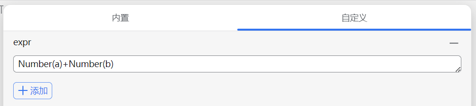

首页
siyuan expression 插件
本项目为思源笔记插件，旨在实现表达式功能。
https://github.com/2234839/siyuan_expr
/
链滴社区讨论
定义块为表达式（具有自定义属性：custom-expr）:
在安装本插件后，会自动将该块内容作为表达式设置到该块的属性[expr]，然后对该表达式求解将结果更新到块内容，就像右侧块：

蓝色块的自定义属性
使用实例
自动翻译文档-expr插件和aichat插件的组合技
内置函数与对象
expr.exprEvalByID(block_id: string): Promise<any>
该函数返回一个 Promise 结果为 block_id 所指向的 expr 块的求值结果
v0.0.12 expr表达式插件支持引用其他表达式计算结果
expr.util.api
可以通过此对象直接调用思源的相关api，具体有哪些请参见：
https://github.com/2234839/OceanPress_siyuan_plugin/blob/main/src/libs/api.ts
开发思路
支持引用文档下的表达式值
更新记录
非前台页面的表达式也会进行计算，方便各种调用情况
计算缓存，在依赖没有发生变化的情况下不会进行新的计算，而是使用之前计算的结果
在思源界面直接更新块属性不会去更新块的updated字段，而我打算使用这个字段减少计算量，那么我应该提供一个更简便的修改表达式的界面，在这个界面进行手动的更新块updated
v0.0.25:
支持更新文档块
，支持表达式调用
expr.util.api
对象
v0.0.12 expr表达式插件支持引用其他表达式计算结果
v0.0.8表达式插件更新